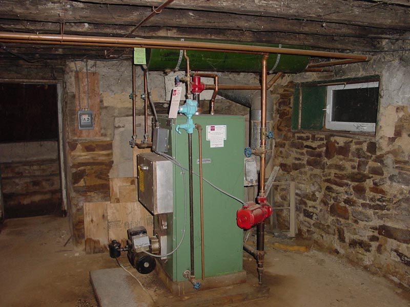

|  |
|
The design of the lesser hall is significantly more industrial than the great hall and is dominated by the fuel-oil driven combination heater and hot-water-heater. The heater draws from an oil tank to the left and vents up the very old fire place behind. Also noticable in the center are the steel doors of the coal-hopper entrance. Hardly used, they are protected by a fine mesh of cobwebs. [ Look at the left side of the lesser hall | Coal doors? | Is that an old fireplace? | Back to the Great Hall ] |